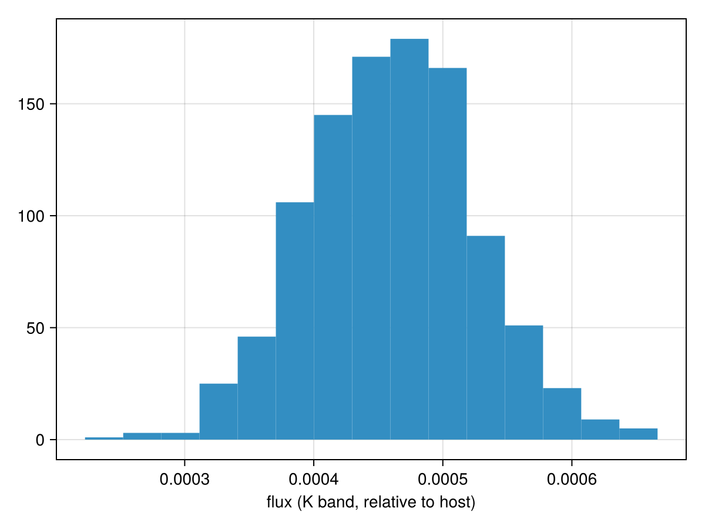
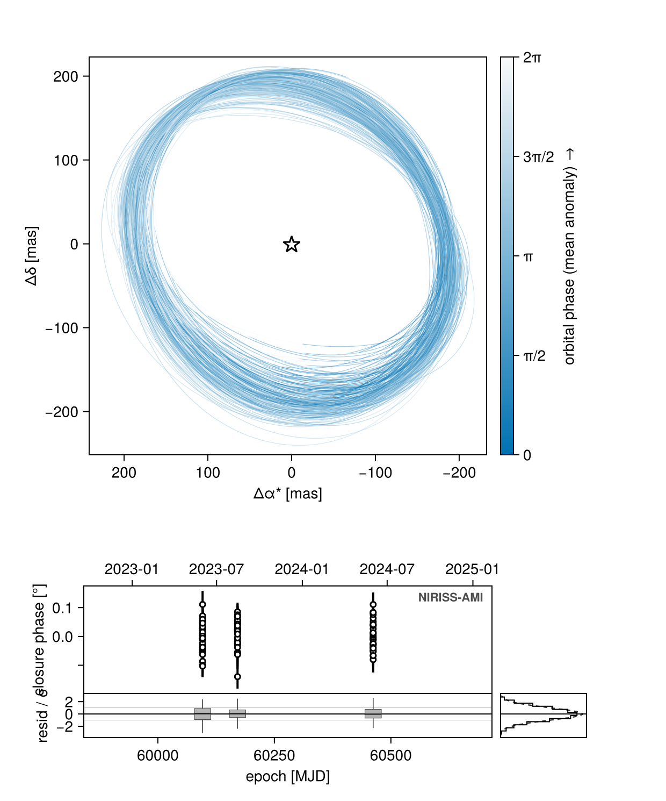
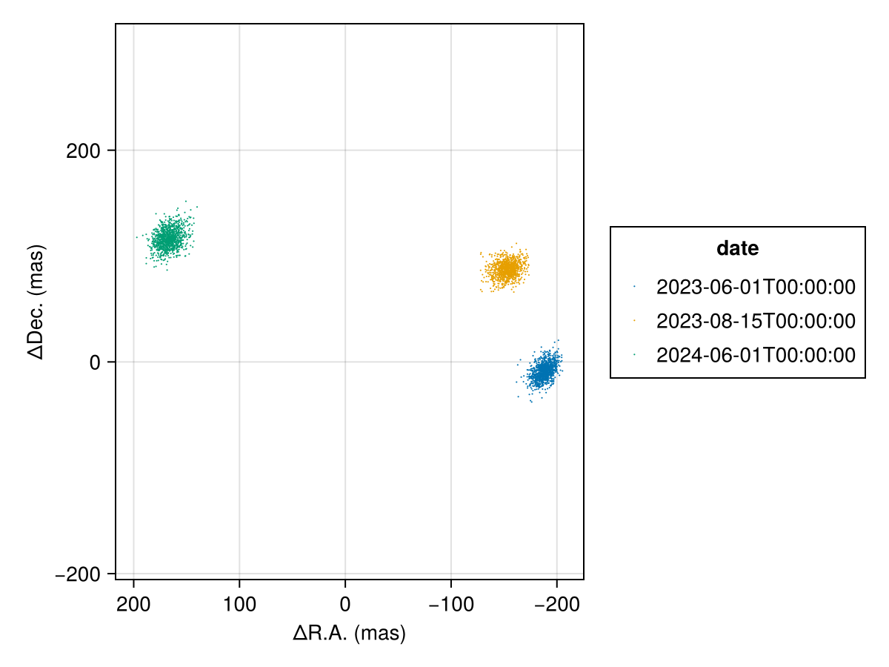
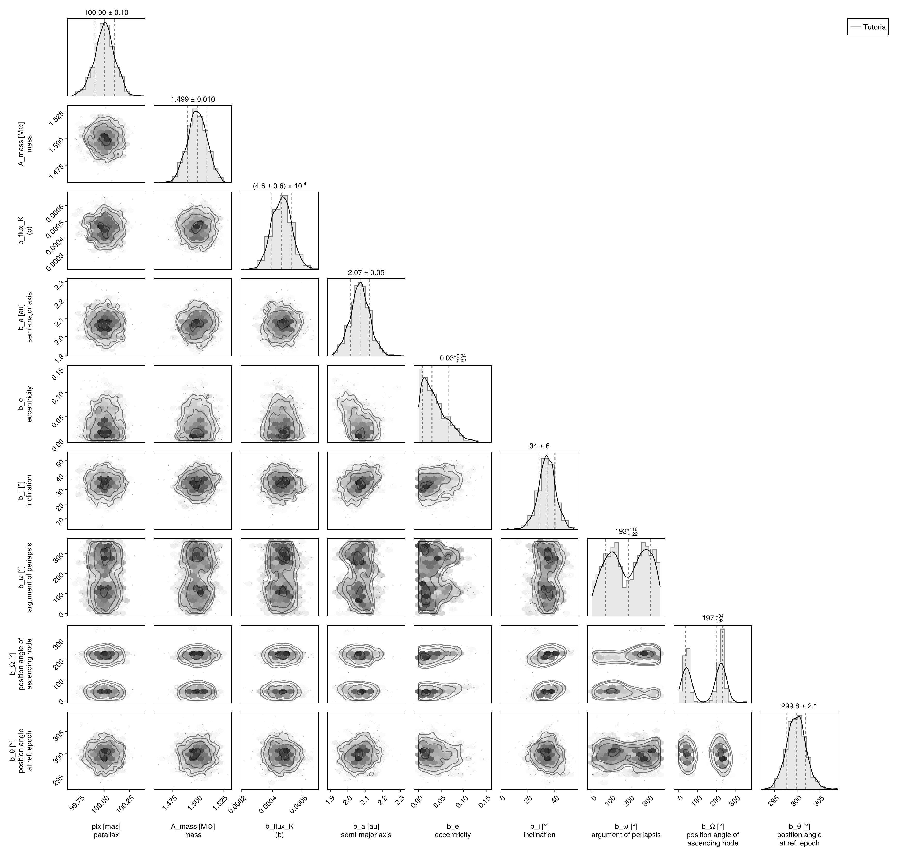

Fitting Interferometric Observables
In this tutorial, we fit a planet & orbit model to a sequence of interferometric observations. Closure phases and squared visibilities are supported.
We load the observations in OI-FITS format and model them as a collection of point sources.
Interferometer modelling is supported in Octofitter via the extension package OctofitterInterferometry. While v9 is an unregistered prerelease it must be installed from the v2 branch, in the same Pkg.add as Octofitter itself — see Installation.
using Octofitter
using OctofitterInterferometry
using Distributions
using CairoMakie
using PairPlots
using Statistics
using PigeonsDownload simulated JWST AMI observations from our examples folder on GitHub:
download("https://github.com/sefffal/Octofitter.jl/raw/main/examples/AMI_data/Sim_data_2023_1_.oifits", "Sim_data_2023_1_.oifits")
download("https://github.com/sefffal/Octofitter.jl/raw/main/examples/AMI_data/Sim_data_2023_2_.oifits", "Sim_data_2023_2_.oifits")
download("https://github.com/sefffal/Octofitter.jl/raw/main/examples/AMI_data/Sim_data_2024_1_.oifits", "Sim_data_2024_1_.oifits")"Sim_data_2024_1_.oifits"The forward model
An interferometric observation in Octofitter is a set of point sources whose complex visibility is
\[V(u,v) = \frac{\sum_j f_j \, e^{-2\pi i (u\,\Delta\alpha^*_j + v\,\Delta\delta_j)}}{\sum_j f_j}\]
targets names the bodies in that sum, ref is the phase centre the offsets are measured from, and each f_j is that body's flux_<band> variable — the host included. There is no privileged primary: a source may orbit any body, so a moon or the wide component of a hierarchical system is expressible.
Build the model
A = Body(
name="A",
variables=@variables begin
mass ~ truncated(Normal(1.5, 0.01), lower=0.1) # M⊙
flux_K = 1.0 # the host is an ordinary source now
end
)
b = Body(
name="b",
about=A,
variables=@variables begin
mass = 0.0
flux_K ~ truncated(Normal(0, 0.1), lower=0) # contrast ratio against the host
a ~ truncated(Normal(2,0.1), lower=0.1)
e ~ truncated(Normal(0, 0.05),lower=0, upper=0.90)
i ~ Sine()
ω ~ UniformCircular()
Ω ~ UniformCircular()
θ ~ UniformCircular()
epoch = 60171.0 # reference epoch for θ. Choose an MJD date near your data.
end
)Now the observation itself:
data = Table([
(; filename="Sim_data_2023_1_.oifits", epoch=mjd("2023-06-01"), use_vis2=false),
(; filename="Sim_data_2023_2_.oifits", epoch=mjd("2023-08-15"), use_vis2=false),
(; filename="Sim_data_2024_1_.oifits", epoch=mjd("2024-06-01"), use_vis2=false),
])
vis_obs = InterferometryObs(
data,
targets = (A, b), # every source in the visibility sum, host included
ref = A, # phase centre
band = :K, # which `flux_<band>` to read
name = "NIRISS-AMI",
variables=@variables begin
# Optional calibration parameters:
platescale = 1.0 # Platescale divisor [could use: platescale ~ truncated(Normal(1, 0.01), lower=0)]
northangle = 0.0 # North angle offset in radians [could use: northangle ~ Normal(0, deg2rad(1))]
σ_cp_jitter = 0.0 # closure phase jitter, degrees [could use ~ LogUniform(0.1, 100))
end
)
sys = System(
name="Tutoria",
bodies=[A, b],
observations=[vis_obs],
variables=@variables begin
plx ~ truncated(Normal(100., 0.1), lower=0.1)
end
)[ Info: [Tutoria] observing_geometry = true (auto): no observation can report comparable predictions (InterferometryObs); nothing to measure, so keeping the correction on — no draws needed (seed 0xc70f177e5000001)
[ Info: [Tutoria] barycentric_lighttime = true (auto): no observation can report comparable predictions (InterferometryObs); nothing to measure, so keeping the correction on — no draws needed (seed 0xc70f177e5000001)A second companion is a third entry in targets plus its own flux_K on its own body — not a second element of a Product distribution.
If you want to include multiple bands, group these into different InterferometryObs objects with different instrument names (i.e. include the band in the name for the sake of bookkeeping), and give the bodies one flux_<band> variable per band.
Closure phases, kernel phases and squared visibilities are all invariant to the phase centre, so ref is a free choice — but only modulo 360°: baseline phases are folded into (−180°, 180°] and the triangle sum is not. Keep ref near the flux centroid; Barycentre (the default) is fine for a faint companion, and A is the conventional choice for a bright one.
Plot the closure phases:
fig = Makie.Figure()
ax = Axis(
fig[1,1],
xlabel="index",
ylabel="closure phase",
)
Makie.stem!(
vis_obs.table.cps_data[1][:],
label="epoch 1",
)
Makie.stem!(
vis_obs.table.cps_data[2][:],
label="epoch 2"
)
Makie.stem!(
vis_obs.table.cps_data[3][:],
label="epoch 3"
)
Makie.Legend(fig[1,2], ax)
fig
Create the model object and sample:
model = Octofitter.LogDensityModel(sys)
init_chain = initialize!(model)
results, pt = octofit_pigeons(model, n_rounds=10)[ Info: Preparing model
┌ Info: Determined number of free variables
└ D = 12
┌ Info: Determined number type
└ T = Float64
ℓπcallback(θ): 0.000038 seconds
∇ℓπcallback(θ): 0.000064 seconds (1 allocation: 32 bytes)
┌ Info: Starting values not provided for all parameters! Guessing starting point using global optimization:
│ num_params = 12
└ num_fixed = 0
┌ Warning: Verbosity toggle: unrecognized_stop_reason
│ Unrecognized stop reason: Too many steps (101) without any function evaluations (probably search has converged). Defaulting to ReturnCode.Default.
└ @ OptimizationBase ~/.julia/packages/OptimizationBase/Jfw5O/src/utils.jl:170
┌ Info: Found sample of initial positions
│ logpost_range = (184.96979218919216, 195.7308346461992)
└ mean_logpost = 192.45800120703225
┌ Warning: This model has priors that cannot be sampled IID.
└ @ OctofitterPigeonsExt ~/octo-maintenance/runner/actions-runner/_work/Octofitter.jl/Octofitter.jl/ext/OctofitterPigeonsExt.jl:192
[ Info: Sampler running with multiple threads : true
[ Info: Likelihood evaluated with multiple threads: false
[ Info: [Tutoria] observing_geometry = true (user)
[ Info: [Tutoria] barycentric_lighttime = true (user)
[ Info: [Tutoria] observing_geometry = true (user)
[ Info: [Tutoria] barycentric_lighttime = true (user)
────────────────────────────────────────────────────────────────────────────────────────────────────────────────────────
scans restarts Λ Λ_var time(s) allc(B) log(Z₁/Z₀) min(α) mean(α) min(αₑ) mean(αₑ)
────────── ────────── ────────── ────────── ────────── ────────── ────────── ────────── ────────── ────────── ──────────
2 0 2.7 2.79 3.39 9.66e+06 72.6 0 0.823 1 1
4 0 3.46 4.82 0.382 2.01e+05 174 0 0.733 1 1
8 0 4.71 5.37 0.763 3.65e+05 181 7.03e-16 0.675 1 1
16 0 6.58 5.68 1.59 6.04e+05 178 0.141 0.604 1 1
32 0 5.86 5.49 3.19 1.16e+06 179 0.384 0.634 1 1
64 5 5.97 2.44 7.49 5.52e+07 176 0.377 0.729 1 1
128 11 5.91 2.83 8.5 9.18e+07 176 0.446 0.718 1 1
256 38 5.94 2.64 13.1 1.9e+08 176 0.474 0.724 1 1
512 67 6.17 2.74 26 3.65e+08 176 0.544 0.713 1 1
1.02e+03 155 6.08 2.71 50.1 7.27e+08 176 0.533 0.716 1 1
────────────────────────────────────────────────────────────────────────────────────────────────────────────────────────Interferometry data is almost always multi-modal (or more precisely non-convex — there is often still a single dominant mode), which is why this page samples with octofit_pigeons rather than HMC.
If you do use octofit instead, treat a single chain as an exploration of one mode: run several chains from different starting points and compare them before believing a single-peaked posterior.
Examine the recovered photometry posterior. The contrast is a body variable, so its chain key is b_flux_K:
hist(results[:b_flux_K][:], axis=(;xlabel="flux (K band, relative to host)"))
Determine the significance of the detection:
phot = results[:b_flux_K][:]
snr = mean(phot)/std(phot)7.1194700645313835Plot the resulting orbit:
octoplot(model, results)
Plot only the position at each epoch. construct_system(model, chain) rebuilds one PlanetOrbits system per posterior draw:
using PlanetOrbits
posteriors = construct_system(model, results)
fig = Makie.Figure()
ax = Makie.Axis(
fig[1,1],
autolimitaspect = 1,
xreversed=true,
xlabel="ΔR.A. (mas)",
ylabel="ΔDec. (mas)",
)
for epoch in vis_obs.table.epoch
sols = [orbitsolve(p, epoch) for p in posteriors]
Makie.scatter!(
ax,
[raoff(s, :b, :A) for s in sols],
[decoff(s, :b, :A) for s in sols],
label=string(mjd2date(epoch)),
markersize=1.5,
)
end
Makie.Legend(fig[1,2], ax, "date")
fig
Finally we can examine the joint photometry and orbit posterior as a corner plot:
using PairPlots
using CairoMakie: Makie
octocorner(model, results)